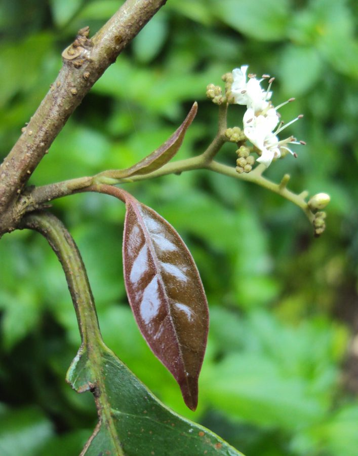

चमरोड़Chamror
Ehretia laevis · Ehretiaceae · FLR-0316

- Scientific name वैज्ञानिक नाम
- Ehretia laevis (Rottler ex G.Don) Roxb.
- Family कुल
- Ehretiaceae
- Hindi हिंदी
- चमरोड़
- Local names स्थानीय नाम
- chamror, chamror tree, koda, datranga
- Status here यहाँ की स्थिति
- native
- Movement आवागमन
- Resident, here all year
- Known from कहाँ दर्ज
- Others have published records from the wider Awadh–Purvanchal plain, none yet from Basti–Ayodhya अवध–पूर्वांचल से दूसरों के प्रकाशित अभिलेख, बस्ती–अयोध्या से अभी नहीं
- IUCN IUCN
- not evaluated
- Review समीक्षा
- not yet reviewed
When to look कब देखें
Present all year. साल भर मौजूद।
Uses and possibilities उपयोग और संभावनाएँ
“Traditional medicine” means a documented traditional use, not a claim that it works. Nothing on this page is medical advice.
Drawn from the documented uses in the profile below, where each is labelled traditional, current or a research lead. All uses →
Tell it apart from इनसे अलग पहचानें
चमरोड़ / Chamror
Ehretia laevis (Rottler ex G.Don) Roxb. — Ehretiaceae
चमरोड़ — शुष्क पर्णपाती जंगलों और बीहड़ों का एक मध्यम आकार का वृक्ष जिसकी छाल चिकनी और हल्के भूरे-सफेद रंग की होती है। फागुन के महीने में जब पेड़ बिल्कुल पत्ती-विहीन होता है, तब शाखाएं छोटे सफ़ेद सुगंधित फूलों के घने गुच्छों से ढक जाती हैं। गर्मियों में इसके छोटे नारंगी-लाल फल पकते हैं जिन्हें ग्रामीण बच्चे और पक्षी बड़े चाव से खाते हैं।
Quick Identification त्वरित पहचान
| Feature | Description |
|---|---|
| Habit | Small to medium-sized deciduous tree 8–12 m tall with an irregular crown (Duthie 1911) |
| Bark | Pale grey or whitish, smooth, marked with horizontal markings and shallow fissures |
| Leaves | Asymmetric, elliptic-oblong or obovate, 6–15 cm long, thin, glabrous and shining (Duthie 1911) |
| Flowers | Small, white, 4–8 mm across, fragrant, in terminal and axillary corymbose cymes (Duthie 1911) |
| Flowering Habit | Blooms abundantly when the tree is completely bare of foliage in late winter |
| Fruit | Globose drupe 5–8 mm across, turning bright orange or red when ripe (Duthie 1911) |
Field tip: Look in late February or March for a smooth-barked pale tree entirely leafless but smothered in sweet-scented white flower clusters that hum with pollinating bees.
हिंदी — कैसे पहचानें: चिकने सफेद-भूरे तने वाला पेड़, जो फागुन में बिना पत्तियों के छोटे सफेद सुगंधित फूलों से भर जाता है, और बाद में छोटे नारंगी-लाल बेर जैसे फल देता है।
Morphology शारीरिक संरचना
Biometrics (Duthie 1911; Brandis 1906):
| Measurement | Range |
|---|---|
| Tree height | 8–12 m (Duthie 1911) |
| Trunk girth | 0.8–1.5 m (Brandis 1906) |
| Leaf length | 6–15 cm (Duthie 1911) |
| Leaf width | 4–9 cm (Duthie 1911) |
| Petiole length | 1.0–2.5 cm (Duthie 1911) |
| Drupe diameter | 5–8 mm (Duthie 1911) |
Trunk and bark: Bole usually short and irregular with smooth, ash-grey or whitish bark, somewhat fluted towards the base on older individuals. Wood greyish-white, moderately hard, even-grained.
Leaves: Alternate, simple, variable in form, typically elliptic-obovate to broadly ovate, obtuse or shortly acuminate, cuneate or unequal at the base. Leaf blade thin, membranous when young, firm at maturity, bright green and glabrous above.
Inflorescence and Flowers: Flowers small, sessile or subsessile, borne in one-sided terminal paniculate cymes. Calyx 5-lobed; corolla white, tube short with five spreading reflexed lobes. The fruit is a subglobose drupe containing 3–4 stony pyrenes surrounded by thin sweetish pulp.
हिंदी: तने की छाल चिकनी और राख जैसी सफेद होती है। पत्तियाँ एकान्तर और पतली होती हैं। फूल गुच्छों में एक तरफ मुड़े हुए खिलते हैं। फल पकने पर चमकीला नारंगी हो जाता है।
Behaviour & Ecology व्यवहार एवं पारिस्थितिकी
Ehretia laevis is a hardy colonising species found on alluvial terraces, dry hill slopes, and calcareous ravine soils. It tolerates prolonged seasonal dry periods by casting its entire canopy early in the winter.
The mass blooming while totally leafless in February and March makes the blossoms highly conspicuous across open landscapes. The abundant white flowers produce rich nectar that supports diverse pollinating insects before general summer vegetation awakens. Frugivorous birds consume the ripe red drupes in April and May, dispersing the hard pyrenes across hedges and fallow lands.
हिंदी: यह पौधा सूखे और बंजर बीहड़ों में भी आसानी से उगता है। बिना पत्तों के फूलने के कारण इसके फूल दूर से दिखाई देते हैं और वसंत में मधुमक्खियों को भरपूर रस मिलता है।
Life Cycle / Phenology जीवन चक्र एवं ऋतुचक्र
| Period | Phenological Event |
|---|---|
| December–January | Complete leaf drop occurs; trees stand entirely dormant and bare |
| February–March | Profuse white flowering erupts across naked branches prior to foliar emergence |
| April–May | Bright green new foliage unfolds while drupes swell and ripen orange-red |
| June–November | Full canopy maintenance through the monsoon and autumn months |
Seeds pass through the digestive tracts of birds, germinating readily with the onset of the monsoon showers in loose sandy soils.
हिंदी: जाड़े में पत्तियाँ गिर जाती हैं। फरवरी-मार्च में बिना पत्तों के फूल खिलते हैं और अप्रैल-मई में नई पत्तियों के साथ लाल फल पकते हैं।
Associated Species / Interactions संबद्ध प्रजातियाँ एवं पारस्परिक क्रियाएं
- Pollinators: Asian Honey Bee, Giant Honey Bee, and syrphid hoverflies swarm the fragrant spring inflorescences.
- Frugivores: Common Myna, red-vented bulbuls, and Indian grey hornbills feed heavily on the ripe drupes.
- Woodland Associates: Grows in scrub associations alongside Kasai, Indian Jujube, and Neem.
हिंदी: इसके फूलों पर मधुमक्खियाँ और मक्खियाँ मँडराती हैं और पके फलों को मैना व बुलबुल खाते हैं।
Pests and Diseases कीट एवं रोग
- Defoliating chrysomelid beetles occasionally skeletonise young foliage flushes.
- Leaf spot caused by Pseudocercospora species appears on mature leaves during prolonged monsoon humidity.
- Termites attack dead wood and aging branches in dry open scrub stands.
हिंदी: बरसात के दिनों में पत्तियों पर भूरे धब्बे पड़ सकते हैं और मृत लकड़ी को दीमक नुकसान पहुँचाती है।
Agricultural / Human Relevance कृषि एवं मानवीय उपयोगिता
Traditional and Ethnobotanical Uses:
- Edible fruit. The ripe orange-red berries are sweet and mucilaginous, traditionally gathered and eaten by pastoralists and children.
- Toothbrush and mouth hygiene. Slender twigs are chewed into traditional toothbrushes ("datun"), known in Awadh as "datranga" because the chewed bark stains the teeth and gums a reddish tint.
- Cattle fodder. The leaves are lopped for livestock fodder during lean winter and pre-monsoon periods.
- Traditional medicine. Bark and leaf pastes have documented traditional applications for ringworm, minor abrasions, and throat relief (Kirtikar & Basu 1935). This is a record of traditional use, not medical advice.
- Agricultural wood. The tough, pliable wood is fashioned into agricultural yokes, tool handles, and cart spokes.
Today. It is increasingly recognised as an ecologically valuable native tree for dryland hedge planting and biodiversity corridors in rural plains.
हिंदी: चमरोड़ की टहनियों से दातुन बनाई जाती है जिसे दातरंगा भी कहते हैं क्योंकि यह मसूड़ों को लाल रंग देती है। इसके मीठे फल खाए जाते हैं और पत्तियाँ पशुओं के चारे के काम आती हैं।
Expected Locally स्थानीय संभावना एवं उपस्थिति
Not a field record. Written from published accounts for eastern Uttar Pradesh. No confirmed local sighting yet — if you have seen it, that is what the atlas needs.
अभी तक स्थानीय पुष्टि नहीं। यह विवरण प्रकाशित स्रोतों से है, किसी अवलोकन से नहीं।
Expected in eastern Uttar Pradesh along woodland margins, riverine bluffs and ravine breaks, field boundaries, and older village shrubberies. GBIF holds published records from the wider Awadh–Purvanchal plain, none yet from Basti–Ayodhya. A first local record would be a dated photograph of the foliage, flowers, or fruit, submitted with locality details through the project's About page.
Distribution भौगोलिक वितरण
Global range: Native across South Asia, from Pakistan and India to Nepal, Bhutan, Myanmar, and into Indochina.
In India: Widespread in deciduous forests and scrub throughout the sub-Himalayan tract, Rajasthan, Uttar Pradesh, Central India, and the Deccan plateau (Brandis 1906).
In Uttar Pradesh: Recorded from the tarai and bhabar belts, Bundelkhand, and the Gangetic plains (Duthie 1911).
In Basti district / eastern UP: Expected in secondary scrub, roadside hedgerows, and riverine bluffs.
हिंदी: यह भारत के मैदानी और पठारी भागों के शुष्क जंगलों में सामान्य रूप से पाया जाता है।
Research Questions शोध प्रश्न
- Is the tradition of using chamror twigs as datun still remembered or practiced in rural Basti? / क्या बस्ती के ग्रामीण इलाकों में चमरोड़ (दातरंगा) की दातुन का चलन अब भी याद किया जाता है?
- Which wild bee species depend on Ehretia laevis during its leafless February flowering peak? / फरवरी में बिना पत्तों के खिलने के दौरान कौन-सी जंगली मधुमक्खियाँ इस पर सबसे अधिक निर्भर रहती हैं?
- How do seedling survival rates compare between open pasture margins and thorny scrub? — Tag and track twenty seedlings across differing grazing regimes.
- What percentage of ripe fruits are consumed by birds versus dropped beneath the canopy? — Sample fruit drop and seed predation over the summer season.
- Does the wood find current use for small agricultural implements in local carpentry? / क्या स्थानीय बढ़ई आज भी जुआठ या औजारों के दस्ते बनाने में इसकी लकड़ी का उपयोग करते हैं?
Similar Species समान प्रजातियाँ
| Species | How to tell apart | हिंदी |
|---|---|---|
| Indian Jujube (Ziziphus mauritiana) | Armed with sharp stipular spines; leaves 3-nerved; fruit yellow-brown | तने पर कांटे, पत्तियाँ 3-नसों वाली |
| Kasai (Bridelia retusa) | Conical spines on trunk; leaves with prominent straight parallel veins | तने पर कांटे, पत्तियाँ समानांतर नसों वाली |
| Lasora (Cordia dichotoma) | Same family; leaves larger, broader; flowers smaller cream; fruit a sticky mucilaginous drupe | पत्तियाँ बड़ी, फल चिपचिपा लसोड़ा |
Field rule: Smooth pale grey bark, small fragrant white flowers borne in profusion while the tree is completely leafless in late winter, followed by bright orange-red drupes, identify Ehretia laevis.
Taxonomy & Classification वर्गिकी एवं वर्गीकरण
Original description. Described by William Roxburgh in 1796 in Plants of the Coast of Coromandel, vol. 1, p. 42, based on materials communicated by Johan Peter Rottler.
Subspecies. Monotypic — widely recognised as Ehretia laevis without formal infraspecific divisions in standard Indian floras.
Family and order placement. Belongs to the family Ehretiaceae in the order Boraginales. Formerly treated as a subfamily within Boraginaceae, molecular phylogenies have reinstated Ehretiaceae as a distinct family characterized by woody habit, bifid styles, and drupaceous fruits.
Phylogenetic notes. Ehretia comprises approximately fifty woody species widely distributed across the tropical and subtropical regions of the Old and New Worlds.
IUCN status rationale. Not evaluated by the IUCN Red List; it remains widespread, abundant, and under no immediate threat across its extensive South Asian range.
हिंदी: इसका मूल वैज्ञानिक वर्णन विलियम रॉक्सबर्ग द्वारा 1795 में किया गया था और इसे बोरागिनेलिस गण के एहरेटिएसी कुल में रखा गया है।
Photo Gallery छायाचित्र दीर्घा
No photos yet — add field photos to media/species/chamror/ and run node scripts/sync_photos.js.
Photos needed आवश्यक फोटो
- [ ] Leafless tree covered in white spring blossoms (बिना पत्तों के सफेद फूलों से लदा पेड़)
- [ ] Smooth ash-grey trunk and branching habit (चिकना राख जैसा सफेद तना)
- [ ] Branches with glossy green leaves and ripening orange drupes (हरी पत्तियाँ और पके नारंगी फल)
References संदर्भ सूची
- Roxburgh, W. (1796). Plants of the Coast of Coromandel, vol. 1, part 3, p. 42, t. 56. W. Bulmer & Co., London.
- Duthie, J.F. (1911). Flora of the Upper Gangetic Plain and of the Adjacent Siwalik and Sub-Himalayan Tracts, vol. 2, pp. 86–87. Government Printing, Calcutta.
- Brandis, D. (1906). Indian Trees, p. 440. Archibald Constable & Co., London.
- Kirtikar, K.R. & Basu, B.D. (1935). Indian Medicinal Plants, 2nd ed., vol. 3, pp. 1681–1682. Lalit Mohan Basu, Allahabad.
- Clarke, C.B. (1883). The Flora of British India, vol. 4, pp. 141–142. L. Reeve & Co., London.
- GBIF Occurrence Data — Ehretia laevis (Rottler ex G.Don) Roxb., India (2025).
Source file: species/flora/trees/chamror.md